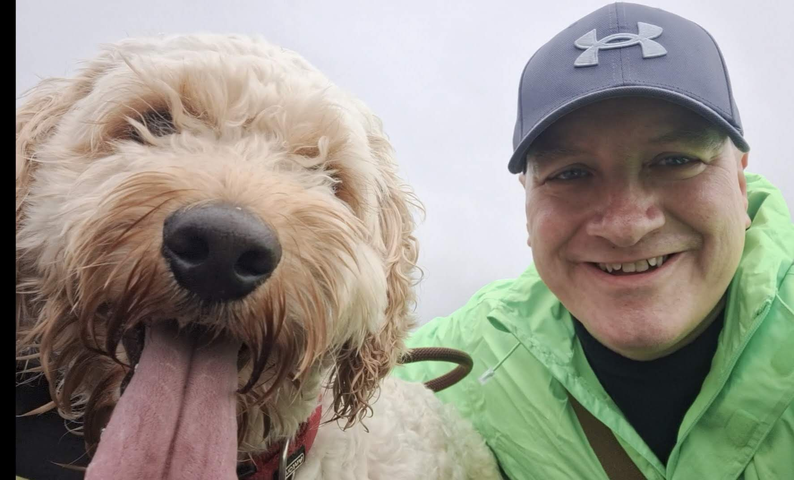
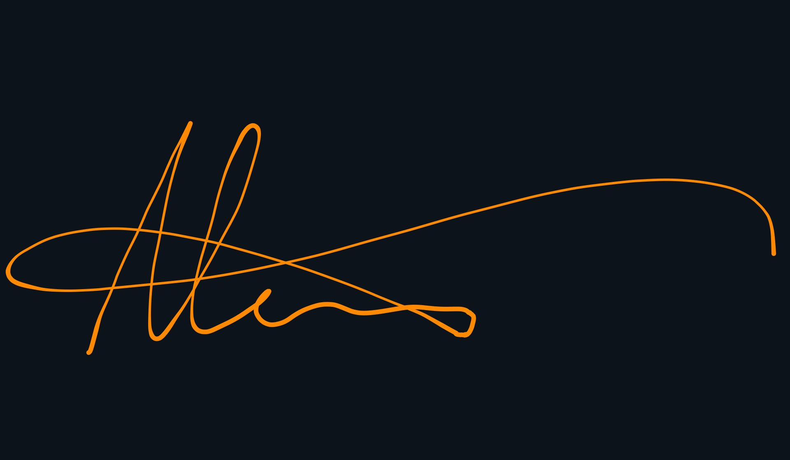

About Me
That’s me and my best furry pal, Andy the Cockapoo, taking a break from my latest project. By trade, I’m an Automation Engineer with over 22 years under my belt solving high-stakes technical challenges, streamlining complex workflows, and making sure critical systems run flawlessly. Building, designing, and problem-solving are core to who I am. Naturally, my love for engineering extends into sci-fi, where Starfleet engineers like Geordi La Forge made turning technical chaos into clean solutions look cool. Over the years, I’ve built a lot of software tools in my professional role, but I’m now actively expanding my skillset into modern web and full-stack development to tap into the cutting-edge tools, frameworks, and workflows driving the field today. Building this site for my UCD Web Development course is a key step in that journey. When I’m not behind a keyboard, I’m usually building or fixing something with my hands—whether that’s dabbling in electronics, 3D printing, or woodworking. At home, I’ve been happily married for 17 years to my lovely wife, Deirdre, sharing our space with Andy and whatever DIY project currently has over my workbench.
You can get in touch with me via the link in the footer or through the contact me page above in the header.
Live long and prosper
